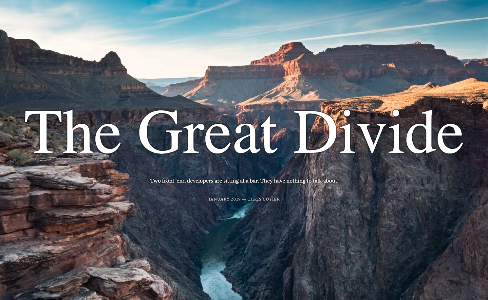

Presentation theme
Zahar Avsievich, SOFTSWISS
The biggest title
Text on transparent overlay
Text

The Great Divide. JANUARY 2019 — CHRIS COYIER
Centered content
Jumping content
Middle title. Is aligned on the left side
@ZAVSIEVICH
Links
Иван Бакаидов — Пандус для сайта